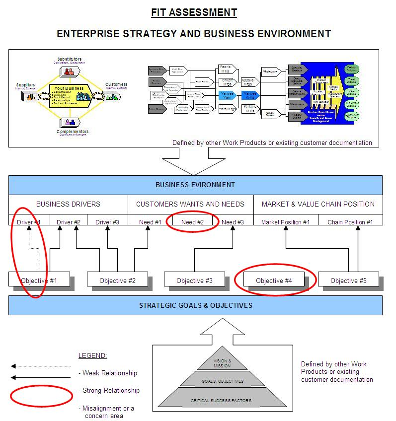
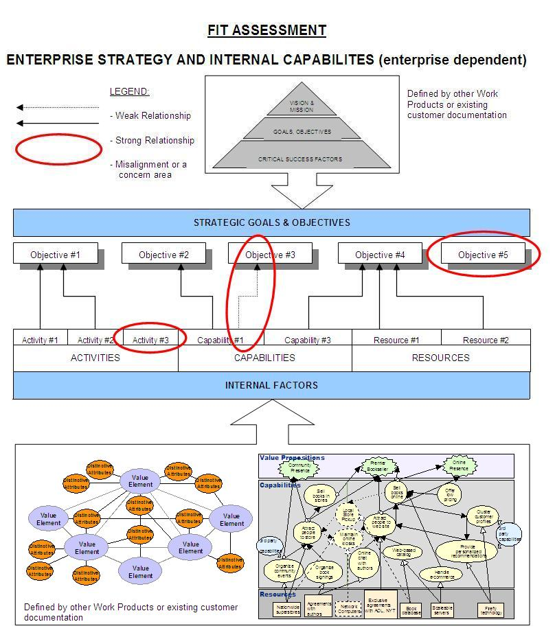
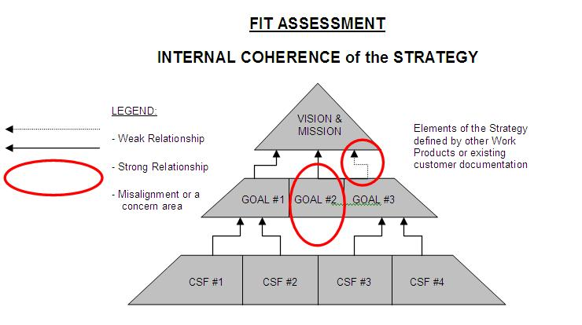

| Guideline: Developing Strategic Fit Assessment |
 |
|
| Related Elements |
|---|
Development of the Strategic Fit Assessment work product is based on existing definitions and analysis of market drivers, internal capabilities, corporate strategy and proposed initiatives. These findings and conclusions are either outcomes of the other work products developed as a part of the same engagement or are already documented in existing client files as a result of a prior work commissioned or internally conducted by the client. If assessment components are being developed as a part of the same engagement the following is a list of main categories of work products providing input and/or relevant to this work product:
If the purpose of the Strategic Fit Assessment is to examine alignment between initiative(s) and the business strategy the enterprise strategy is usually already defined. It is recommend however, to review or validate the strategy prior to conducting the fit assessment to ensure that the strategy is up to date and that it is commonly interpreted and understood by the project participants: IBM as well as the client team. The approach to validate the enterprise strategy is defined in the Transition Initiatives work product. Upon collecting and validating the base information the team has to construct the dependency diagrams depicting relationships between the elements. It is intended to visualize dependencies between elements and the strength of support or influence they exercise. Note that the fit between the components, particularly in the capabilities area of the assessment, can be categorized using three types of “fit” as defined by Michael Porter in article “What is Strategy.” The Porter’s types of “fit” are as follows: Consistency (First-order Fit), Reinforcement (Second-order fit) and Optimization (Third-order fit). The diagrams tend to have a hierarchical structure with various arrow connections indicating strength and relevance of the dependency. On the typical business strategy engagement there is a need to develop several dependencies diagrams to examine all relevant aspects of the strategy. Their graphic nature allowing fit assessment “at a glance” makes them the preferred method to identify misalignment of the strategy. However, depending on complexity of the engagement and the client preferences instead of the diagrams the team can use tables with appropriate drivers and components in columns and strategic objectives in rows, or vice versa. Tables are often used to capture correlation between vision, mission, goals CSFs and measurements. The identified misalignments together with the high level postulates addressing them are then described in the narrative section of the analysis.  
 |
| © Copyright IBM Corp. 1987, 2012 All Rights Reserved Property of IBM These materials are intended only for use as part of an IBM engagement |